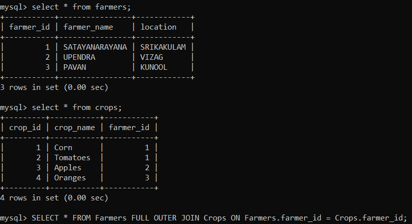

Full Outer Join
FULL JOIN (or FULL OUTER JOIN): The FULL JOIN returns all the rows from
both tables including unmatched rows from both sides. If there is no
match, NULL values are returned for the columns of the opposite table.
